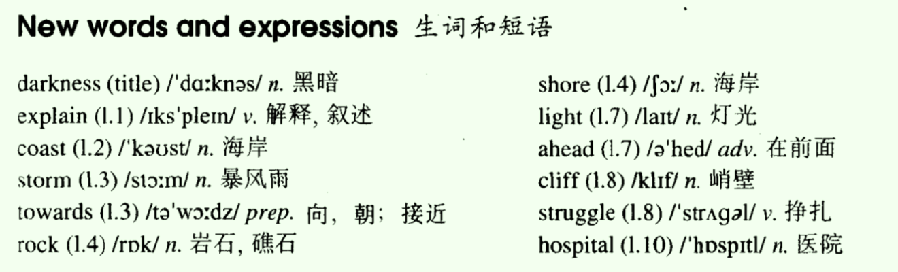
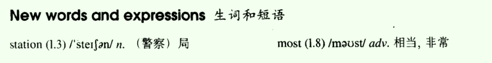
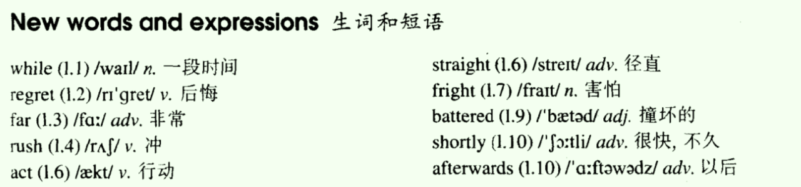
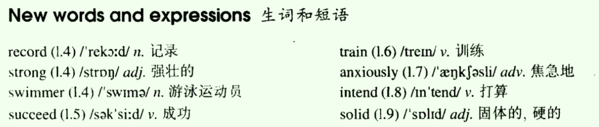
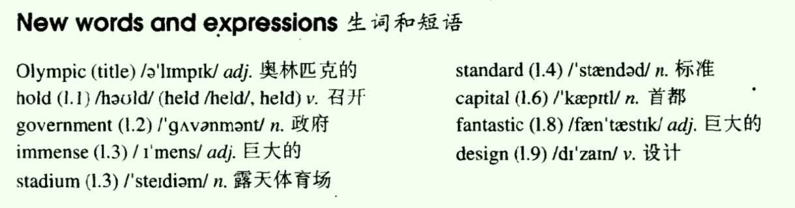
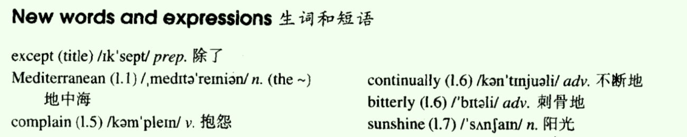
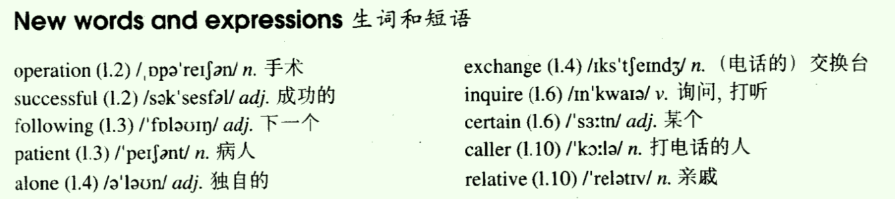
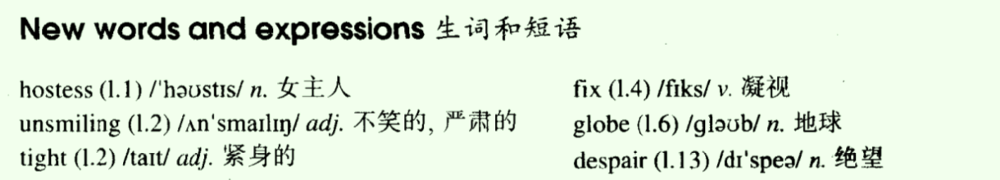

- Lesson 33 Out of the darkness
- Lesson 34 Quick work
- Lesson 35 Stop thief!
- Lesson 36 Across the channel
- Lesson 37 The Olympic Games
- Lesson 38 Everything except the weather
- Lesson 39 Am I all right?
- Lesson 40 Food and talk
Lesson 33 Out of the darkness
一、单词讲解
- 1、darkness：n. 黑暗
- dark：adj.
- ness：
- happiness
- nervousness
- carelessness
- business（busy）
2、explain：v. 解释、叙述；
- explanation：n.
3、storm：n. 暴风雨；
- rain storm
- snow storm
- sand storm
- brain storm：头脑风暴
4、towards：prep. 向、朝、接近；
- 介词后面接名词、代词、动名词
- towards比to更具过程感、形象；
- towards evening
- walk towards the door
- The ball flew towards me.
5、ahead：adv. 在前面
- go ahead：先走，引申义：先请、先来、你请便
All

二、课文&语法讲解
1、本文重点
- 表示地点的介词（prep.）
2、课文
- Why was the girl in hospital?
- Nearly a week passed before the girl was able to explain what had happened to her.
- sth. happen to sb. 某事发生在某人身上
- 英文单词的中文意思相同，可以根据该单词的词性来区别；
- pass
- v. A week passed.
- past
- prep. It is eleven past ten.
- n. We cannot change the past.
- adj. The past experiences brought me here.
- pass
- One aftermoon she set out from the coast in a small boat and was caught in a storm.
- set out/off：出发
- be caught in ...：被动语态，catch（抓住）
- we are caught in a rain.
- I was caught in the traffic jam yesterday.
- Towards evening, the boat struck a rock and the girl jumped into the sea.
- in：一直在里面；（静态）
- into：进入里面去；（动态）
- walk into the classroom
- We're sitting in the classroom.
- Then she swam to the shore after spending the whole night in the water.
- strike、struck、struck：撞击、敲打
- swim、swam、swum
- During that time she covered a distance of eight miles.
- cover：这里表示“行过、走过、游过”
- Early next morning, she saw a light ahead.
- a light ahead：前面的一盏灯；ahead是形容词，作定语，这里放在所修饰的名词的后面；
- She knew she was near the shore because the light was high up on the cliff.
- know、knew、known
- On arriving at the shore, the girl struggled up the cliff towards the light she had seen.
- on doing：“一怎么怎么样、做什么事情，就...”，相当于一个由as soon as引导的时间状语从句；
- at：若是将地点当成一个整体的地点来处理，使用at；
- at the airport/station：在机场/车站（补：the是特指，在这里可以理解为某时某刻所在的那个机场，而不是世界上其他的那些机场；这是英语的习惯；表达一定要说清楚具体，是任何一个机场，还是有某人在的这个机场）
- the light (that/which) she had seen
- That was all she remembered.
- all：是代词，通常代表名词的，和名词的效果一样的，作表语；这里也是定语从句（翻译时往前翻译），关系词作宾语（省略了）；
- all (that) she remembered：因为先行词是代词all，所以这里只能使用that
- When she woke up a day later, she found herself in hospital.
3、表示地点的介词（prep.）
- L9：介词（prep.）
- set out from the coat
- swam to the shore
- towards the light she had seen
- jumped into the sea
- out of darkness
- arriving at the shore：在一个“点”；一维
- on the cliff：在“一个平面”的上面；二维
- _in_ a small boat / in a storm / in hospital：在“立体空间”的里面；三维
- 注意：
- 英语中，介词词组的搭配不是固定的，而是取决于想表达的意思；
- 之前的“固定搭配”只是习惯搭配，大家都这样用（从重），不代表都这样使用；
- on the desk（在桌上）/ in the desk（在桌子里面）/ jump at the desk （跳到桌子上）
- Don't throw the rubbish out of the window.
- Please come into the classroom and join us.
- He is in Shanghai, and he will fly from Shanghai to/for Beijing.
- She hopes that she will stand on the top of highest mountain some day.
- It is impolite to point at/to people.
- I put the laptop in/into/on your bag.
三、知识扩展
- 1、表示地点的介词（prep.）
- The employee at the home office who can communicate well with foreign clients over the telephone or by fax machine is an obvious asset to firm.
- Mr. Rector and others argued that once 'the habit of dependency is cracked,' then the country can make other policy changes aimed at improving living standards.
- The bacteria （细菌） which make the food go bad prefer to live in the watery regions of the mixture.
- There was a time in my life when people asked constantly for stories about what it's like to work in a field dominated by men.
- As we have seen, the focus of medical care in our society has been shifting from curing disease to preventing disease ...
- In recent years much more emphasis has been put D developing the students' productive skills. 放在什么方面
- A、over；B、onto；C、in；D、on；
Lesson 34 Quick work
一、单词讲解
1、station：n. 局、站；
- the police station
- bus/subway/railway + station
2、most：adv. 相当，非常
- a most interesting story：很、非常，相当于very，没有the就不表示最高级了
- the most interesting story：最
All

二、课文&语法讲解
1、本文重点
- 复习L10 被动语态
2、课文
- How long had the police taken to find his bicycle?
- Dan Robinson has been worried all week.
- worried：形容词，担心；be worried
- Last Tuesday he received a letter from the local police.
- In the letter he was asked (ask) to call at the station.
- 拜访
- call on sb.
- call at sp.
- visit sb./sp.
- 拜访
- Dan wondered why he was wanted (want) by the police, but he went to the station yesterday and now he is not worried anymore.
- be wanted：被召唤、想要；
- At the station, he was told (tell) by a smiling policeman that his bicycle had been found (find).
- Five days ago, the policeman told him, the bicycle was picked up (pick up) in a small village for hundred miles away.
- , the policeman told him,：插入语（可以忽略不看）
- pick up：捡起、偶然得到；
- It is now being sent (send) to his home by train.
- now：副词，要放在助动词后，实意动词之前；
- It is now being sent to his home by train.
- 现在进行的被动
- now：副词，要放在助动词后，实意动词之前；
- Dan was most surprised when he heard the news.
- surprised两种理解方式：
- a. 动词surprise，被动语态；
- b. 形容词surprised，惊奇的，惊讶的，处于这种状态（be）；
- c. 类似的还有broken、worried等；
- most：非常，相当于very；
- surprised两种理解方式：
- He was amused too, because he never expected the bicycle to be found (to find).
- expect sth to do：预期某事怎么..
- to do不定式 + 被动语态：to be done
- It was stolen (steal) twenty years ago when Dan was a boy of fifteen!
三、知识扩展
- 1、补充内容：call
- He called out to me, but I didn't hear him. 喊，叫唤
- I will call you later. 打电话
- 过去：交通基本靠走，沟通基本靠吼；
- He was asked to call at the station.（当面喊）拜访
- I called on Lisa last week.
- It began to rain so we called off the match. 取消
Lesson 35 Stop thief!
一、单词讲解
1、while：n. 一段时间
- a short while ago
- for a while
- conj. 当...的时候，后面加句子（只能使用延续性的动词，通常将其变成进行时态，但不一定）
- some of the detectives were waiting inside the main building while others were waiting on the airfield.
2、regret：v. 后悔
- regret、regretted、regretted
- regret sth.
3、straight：adv. 径直
- drive/run straight at ...
- adj.直的；straight hair/line
4、fright：n. 害怕
- get a fright
- frighten：v.
5、battered：adj. 撞坏的
- batter：v.
All

二、课文&语法讲解
1、本文重点
- 复习26 ~ 34课
- such ... that ...
- when、while、as
2、课文
- How did Roy stop the thieves?
- Roy Trenton used to drive a taxi. 意味着现在不这样做了
- A short while ago, however, he became a bus driver and he has not regretted it.
- He is finding his new work far more exciting.
- far修饰比较级（说明幅度）：far more exciting
- 幅度大：much / a lot / far 更
- 幅度小：a little(bit) 一点点
- even：不能体现幅度，但是表示突出强调，“甚至...”
- Letters will cost a little more ...
- I am even less lucky.
- When he was driving along Catford Street recently, he saw two thieves rush out of a shop and run towards a waiting car.
- recently：中文的“最近”表示现在的事，英语中的表示过去的事，通常与过去时连用；
- see sb. do sth.
- see sb. doing sth.：强调正在做
- ** he saw two thieves rush ... and (he saw tow thieves) run ...：rush、saw使用原形（词组中是原形）、并列句**
- rush out of a shop and run towards a waiting car
- One of them was carrying a bag full of money.
- a bag full of money：full of ...是形容词短语，此处作定语，相当于which was full of money
- Roy acted quickly and drove the bus straight at the thieves.
- The one with the money got such a fright that he dropped the bag.
- such ... that ...：如此...以致于...，太怎么怎么...所以...，因果关系，that引导结果状语从句；
- such后面只能接名词、名词词组；
- It is an interesting story. I want to share it with you.
- It is such an interesting story that I want to share it with you.
- It is an interesting story. I want to share it with you.
- so ... that：so后面接形容词、副词；参考Lesson 30；
- The story is interesting. I want to share it with you.
- The story is so interesting that I want to share it with you.
- The box is heavy. I cannot carry it.
- The box is so heavy that I cannot carry it.
- She worked hard. She won the prize.
- She worked so hard that She won the prize.
- I am tired. I want to sleep for an entire day.
- I am so tired that I want to sleep for an entire day.
- The thieves ran away quickly. I didn't have time to call the police.
- The thieves ran away so quickly that I didn't have time to call the police.
- such后面只能接名词、名词词组；
- such ... that ...：如此...以致于...，太怎么怎么...所以...，因果关系，that引导结果状语从句；
- As the thieves were trying the to get away in their car, Roy drove his bus into the back of it.
- 表示“乘坐”的两种方式：
- a. by+交通工具名词，名词前不用the/my/his/their等限定词，by表示一个抽象概念的“乘坐”；
- by+car/train/bike/plane/ship
- b. in+限定词＋交通工具名词，等价于“by+交通工具名词”；
- a. by+交通工具名词，名词前不用the/my/his/their等限定词，by表示一个抽象概念的“乘坐”；
- 表示“乘坐”的两种方式：
- While the battered car was moving away, Roy stopped his bus and telephoned the police.
- 对比： When he was driving along Catford Street recently ...
- as、while后面只能接延续性的动词，通常以进行时出现；而when不要求动词类型、时态；
- The thieves' car was badly damaged and easy to recognize.
- Shortly afterwards, the police stopped the car and both men were arrested.
- shortly afterwards：不久之后
三、知识扩展
1、修饰比较级的词
- He is finding his ... work far more exciting. L35
- Letter will cost a little more ... L22
- I am even less lucky. L20
- 他的哥哥甚至比他的爸爸高。
- His brother is even taller than his father.
- 那个电影比我想的要更有趣很多。
- 中文的“这个”、“那个”，在英语中都是“特指”，使用the就可以了，不一定使用this、that；
- The film is much more interesting than I thought.
- 我认为你可以花更多一点的钱买书。
- I think you can spend money (in) buying books.
- I think you can spend a little more money (in) buying books.
2、so/such ... that ...
- The film is so good that I would like to watch it again.
- It is such a good film that I would like to watch it again.
- According to two recent studies, randomly assigned roommates of different race are more likely to experience conflicts so strained that one roommate will move out.
Lesson 36 Across the channel
一、单词讲解
1、record：n. 记录；
- set up a new world record
- hold/keep a record
- break a record
- record-holder：保持记录的人
- off the record：私底下谈，不要记录在案
- v. 记录、录；（和n.发音不同）
2、succeed：v. 成功；
- succeed in sth. / succeed in doing sth
- success：n.
- successful：adj.
- successfully：adv.
- do sth. successfully
3、train：v. 训练
- train sb. to do sth.
4、anxiously：adv. 焦急地；
- 可以修饰整件事（放在句首，加逗号，之后加句子）、动作（放在动词后，do sth. anxiously）；
- anxious：adj.
5、intend：v. 打算；
- intend to do sth.
6、solid：adj. 固体的、硬的；
- liquid；
- gas；
All

二、课文&语法讲解
1、本文重点
- 复习：表示将来的几种方式
- 非限定性的定语从句
2、课文
- What is Debbie going to try to do?
- Debbie Hart is going to swim across the English Channel tomorrow.
- 一般将来时（L12）：will/shall do、am/is/are going to do
- She is going to set out from the French coast at five o'clock in the morning.
- set out/off：出发
- Debbie is only eleven years old and she hopes to set up a new world record.
- set up：创立、建立
- She is a strong swimmer and many people feel that she is sure to succeed.
- be sure to do：确定做某事
- Debbie's father will set out with her in a small boat.
- Mr. Hart has trained his daughter for years.
- Tomorrow he will be watching her anxiously as she swims the long distance to England.
- 将来进行时（L13）：将来某事正在进行、将来确定发生的事；will be doing
- as：when、while，引出时间状语从句；
- swims：这里为什么使用一般现在时？
- 在L16，在条件状语从句中，想表示将来要换成一般现在时（主将从现）；除了条件状语从句，时间状语从句也一样；只有两种从句比较特殊，需要改变时态；
- 时间状语从句想表示将来，必须换成一般现在时；
- 换句话说，时间状语从句中一般现在时，表示将来；
- I will tell him the news, when he comes (come) back later.
- As soon as the plane lands (land), I will let you know.
- As soon as：一怎么怎么...，表时间的
- Debbie intends to take short rests every two hours. 打算作某事
- take/have short rests
- have a break：休息一下
- She will have something to drink but she will not eat any solid food.
- to drink修饰前面的something；
- Most of Debbie's school friends will be waiting for her on the English coast.
- Among them will be Debbie's mother, who swam the Channel herself when she was a girl.
- 翻译：他们当中还会有Debbie的妈妈，...
- among：介词，表示在什么之间（三者及以上）
- between：表示两者之间；
- 主语可以名词、代词、doing/to do、从句，但是介词短语不能做主语；介宾短语可以做表语；这里是倒装句；
- The ball is under the desk.
- Debbie's mother will be among them.
- 句子必须有一主一谓，be用来占位的；
- 为什么这里要倒装？
- Most of Debbie's school friends will be waiting for her on the English coast.
- Among them will be Debbie's mother, who swam the Channel herself when she was a girl. who引出了定语从句
- a) 英语中，就近修饰；这里若不倒装就修饰them，会引起歧义；
- b) 承上启下；them承接了上文了friends；
- Among them will be Debbie's mother , who swam the Channel herself when she was a girl. 非限定性的定语从句
3、非限定性的定语从句
- I met your friend who was staying in Paris. 限定性的定语从句
- n.的范围不确定 -> 要限定 -> 无逗号隔开；
- I met your mother, who was staying in Paris. 非限定性的定语从句
- n.的范围确定 -> 不用限定 -> 有逗号隔开
- 如何判断n.范围是否确定？
- a. 永远明确的：专有名词、独一无二（mother、earth等）；
- b. 相对明确的：文章上下文中明确的，比如the book.
- This is the wall which they built last week.
- This is the Great Wall, which is world-famous.
- 限定性的定语从句：
- a) 无逗号；
- b) 从句不能省略，其修饰前面的名词，要往前翻译；
- 限定性的定语从句：
- a) 有逗号；
- b) 从句可以省略，额外的补充说明，不需要往前翻译；
- c) 关系词要求更严格：不能用that；作宾语不能省略；指人作宾语只能用whom，不能使用who；
- He came from Beijing , which is the capital of China.
- He came from a city which/that is in the north of China.
- This is the businessman (who/whom/that) we are cooperating with. 作宾语
- This is Bill Gates , whom many people know as the richest man. 作宾语
- 特殊情况：非限定性的定语从句中，“逗号+which”中的which其实是可以指代前面的整个句子（整件事）；
- You're working hard, which is good for English.
- hard：adv./adj.
- You're working hard, which is good for English.
- I met your friend who was staying in Paris. 限定性的定语从句
三、知识扩展
- 1、非限定性的定语从句
- Among them will be Debbie's mother , who swam the Channel herself when she was a girl.
- 特殊的 非限定性的定语从句：
- Tony had passed the exam , which surprised us. which指代前面整个句子（整件事），不是名词
- They sell the goods in a very low price , which is a bad way to do business. which指代前面整个句子（整件事），不是名词
- A person's early life and its conditions are often the greatest gift to an individual , which/as any biographer knows. which/as指代前面整个句子（整件事）；as也可以指代
- As any biographer knows, a person's early life and its conditions are often the greatest gift to an individual.
- A person's early life and its conditions, as any biographer knows, are often the greatest gift to an individual. 放在句子中间做插入语，主语和谓语动词中间
, which只能放在整个句子（整件事）的后面；但, as位置比较灵活（后面、句首、插入语）；
Lesson 37 The Olympic Games
一、单词讲解
1、Olympic：adj. 奥林匹克的；
- the Olympic Games
2、immense：adj. 巨大的；
- fantastic：adj. 巨大的、好的、幻想的；
- fantasy：n. 幻想；
- 大的：big、large、huge、vast、enormous、tremendous、colossal、gigantic、titanic
All

二、课文&语法讲解
1、课文
- When was the last time this country hosted the Olympic Games?
- The Olympic Games will be held in our country in four years' time.
- 将来时 + 被动语态
- As a great many people will be visiting the country, the government will be building new hotels, an immense stadium, and a new Olympic-standard swimming pool.
- will be done（将来时的被动） vs. will be doing（将来进行时）
- 这里as是连词，翻译成“因为”，引出原因状语从句；
- They will also be building new roads and a special railway line.
- The Game will be held just outside the whole area will be called 'Olympic City'.
- Workers will have completed the new roads by the end of this year.
- by用法
- 方式方法，by train；
- 被动语态，by动作发出者；
- 在旁边，by方位（L27、L30）
- by + 时间：截止到什么什么时间之前；从某个时间点回头想之前看，通常与完成时连用；
- 完成时：过去、现在、将来；具体是什么完成时，由by后面的时间说的算；by now（现在完成时）、by last week（过去完成时）、by the end of this year（将来完成时）；
- by用法
- By the end of next year, they will have finished work on the new stadium.
- The fantastic modern building have been designed by Kurt Gunter.
- Everybody will be watching anxiously as the new buildings go up.
- 这里as是连词，翻译成”当、正值“，引导时间状语从句；
- 时间状语从句中，使用一般现在时(go)表示将来；
- We are all very excited and are looking forward to the Olympic Games because they have never been held held before in this country.
- look forward：向前看
- look forward to：这里的to为介词，后面接名词、代词、动名词
- We look forward to celebrating the Spring Festival.
2、将来完成时（使用的比较少）
- 形式：will/shall + have done
- 用法：将来的之前，站在将来向之前看；
- By the end of next year, they will have finished (finish) work on the new stadium.
- By February next year I D on this job for five years.
- A. shall be here；B. must have been here；C. have been here；D. shall have been here；
- 完成时：a) 不一定代表都做完了；b) 阶段性的总结；
三、知识扩展
1、look forward to
- We look forward to being invited to attend the opening ceremony (被邀请出席开幕式).
- look forward to being invited
- Leaving one's job, whatever job it is/no matter what job it is (不管是什么工作), is a difficult change, even for those who look forward to retiring.
- We look forward to being invited to attend the opening ceremony (被邀请出席开幕式).
2、比较
- will be done：一般将来时的被动
- will be doing：将来进行时
- will have done：将来完成时
- You don't have to plan so far ahead - so many things C by next year.
- A. changed；B. is changing；C. will have changed；D. has changed；
- I hear that you are planning to buy a car.
- Yes. By next month,I A enough money.
- A. will have saved；B. will be saving；C. has saved；D. saves；
- On their next anniversary, they D married for twenty years.
- A. is；B. has been；C. will be；D. will have been；
- You don't have to plan so far ahead - so many things C by next year.
Lesson 38 Everything except the weather
一、单词讲解
1、except：prep.（介词） 除了；
2、complain：v. 抱怨；
- complain about / of ...（抱怨的内容，人、事）
- complain to ...（抱怨倾诉的对象）
- They complained to the manager about the customer service. 关于客户服务的事
3、continually：adv. 不断地、频繁地、反复地；
- continue：v.
- continual：adj.
- continuously：adv. 连续不断地；（没有间断的）
- The river flows continuously under the bridge.
- It rained continually.
4、bitterly：adv. 极其地；
- bitterly cold
- bitter：adj. 味苦的、强烈的；
- batter：v. 猛击、打坏；
- better：adj./adv. 较好的；
All

二、课文&语法讲解
1、本文重点
- 复习L14（过去完成时 vs. 一般过去时）
- no sooner ... than ...
- hardly ... when ...
2、课文
- Why did Harrison sell his house so quickly?
- My old friend, Harrison, had lived in the Mediterranean for many year before he returned to England.
- 过去完成时（过去的过去）、一般过去时（过去）
- He had often dreamed of retiring in England and had planned to settle down in the country.
- dream of：梦到、梦想，幻想，向往
- plan to do sth. 计划做某事
- settle down：定居，安定下来（心理）
- He had no sooner retuned than he bought a house and went to live there.
- no sooner ... than ...：表示“一...就...”，引导时间状语从句
- As soon as he had returned, he bought a house and went to live there. L14；
- 区别：
- a) 位置：as soon as的位置简单， no sooner ... than比较麻烦，需要插入到两件事中间去；
- b) 时态：as soon as两件事的时态不限制；no sooner ... than的时态比较固定，通常接过去的两种时态（过去完成时、一般过去时）；
- 我回到厨房，门铃就响了。L54
- get back to ... doorbell
- I had not sooner got back to the kitchen than the doorbell rang.
- 我们一到车站，火车就开了。
- We had no sooner arrived at station than the train left.
- Almost immediately he began to complain about the weather, for even though it was still summer, it rained continually and it was often bitterly cold.
- Almost immediately：几乎立刻
- complain about
- for + 句子：表示“因为”，等于because；不能放在句首；
- even though：表示“尽管..、虽然..”，引出让步状语从句；
- 让步状语从句（明让步，暗转折）
- 中文中：句子之前的关联词是成对的，比如“因为...所以...”；
- 英语中：有了“因为”，不能有“所以”，两个（关联词）只能出现一个；
- _even though_ it was still summer, it rained continually ...
- = It was still summer, but it rained continually ...
- “让步”为“转折”作铺垫，“转折”的内容更重要；
- “让步”和“转折”不能同时出现；
- 类似的还有although、though、even if可以引出让步状语从句；
- 两个句子（两件事）用一个连接词（but、and、when等），三个句子（三件事）用两个连接词...（连接词的数量永远比句子少一个）：连接词的位置可以灵活使用，只要数量对了就行；
- for、even though、and；
- After so many years of sunshine, Harrison got a shock.
- He acted as if he had never lived in English before.
- as if：表示“似乎、好像”，引出表示方式的状语从句；
- In the end, it was more than he cold bear.
- He had hardly had time to settle down when he sold the house and left the country.
- hardly ... when ...：表示“一...就...”，等同于no sooner ... than ...
- 区别：hardly ... when ...的两件事的时间的间隔非常非常的短，更紧迫（hardly的意思为“几乎不”）；为了突出非常的短，课文翻译为“还没来得及...，就...”
- 比较：
- He had no sooner retuned than he bought a house and went to live there.
- The dream he had had for so many years ended there. 定语从句
- The dream (which/that) he had had for so many years ended there.
- Harrison had thought of everything except the weather.
- think of：考虑、想起；
三、知识扩展
- 1、过去完成时、一般过去时、no sooner ... than ...
- 我一离开家，天就开始下雨。
- I had left home. It began to rain.
- I had no sooner left home than it began to rain.
- 我们一把画挂在墙上，它就掉下来了。
- We had hung the picture on the wall. It fell down.
- We had no sooner hung the picture on the wall then It fell down.
- 我一离开家，天就开始下雨。
Lesson 39 Am I all right?
一、单词讲解
1、operation：n. 手术
- have an operation
- n. 操作、运转、经营
- business operation
- n. 行动
- rescue operation：营救行动（rescue：n.、vt. 营救救援)
- military operation：军事行动
2、successful：adj. 成功的
- successfully：adv.
- success：n.
- succeed：v. succeed in sth. / in doing sth.
3、patient：n. 病人；adj. 有耐心的；
- impatient：adj. 不耐心的、不耐烦的；
4、alone：adj. 独自的（强调的是人数是一个人a）； adv. 独自地；
- lonely：adj. 偏僻的、人迹罕至的、孤单寂寞的；（强调的是内心感受）；没有adv. ；
- The old lady lived alone, so she felt lonely.
- leave me alone!
All

二、课文&语法讲解
1、本文重点
- 直接引语 变 间接引语（L15）
2、直接引语变间接引语
- He say, 'I am a fool.'
- He says (that) he is a fool. 变成宾语从句了
- 步骤：
- a) 引号打开：变成宾语从句，看引号中的句子的类型；
- b) 设身处地、转换角度（人称、时态、代词或状语 等）；
- 宾语从句（L7、L26）
- 陈述句
- He will help us.
- We know (that) he will help us. that不做成分，可以省略
- 特殊疑问句(wh-、how开头)
- What did you say?
- We know what you said. （疑问词+先主后谓，主语提前）
- 一般疑问句（YES/NO question）
- Is she coming here?
- We know whether/if she is coming here. （whether/if+先主后谓，主语提前；建议都使用whether，if有些情况不能用）
- 陈述句
- 'I am inquiring a certain patient ...'
- Mr. Gilbert said (that) he was inquiring a certain patient ....
- 'When will Mr. Gilbert be allowed to go home?'
- He then asked when Mr. Gilbert would be allowed to go home.
- 'Was my operation successful?' 说话的内容为过去时
- He asked his doctor to tell him whether/if his operation had been successful. 转述后为过去完成时
- He say, 'I am a fool.'
3、课文
- Why did Mr. Gilbert telephone Dr. Millington?
- While John Gilbert was in hospital, he asked his doctor to tell him whether his operation had been successful, but the doctor refused to do so.
- refuse to do sth.
- so：
- 这里为代词，指代前面的内容，翻译为“如此这样”；
- I think/believe/guess so.
- so还可以为连词，表示“所以”；
- 这里为代词，指代前面的内容，翻译为“如此这样”；
- The following day, the patient asked for a bedside telephone.
- ask for：请求、索要
- a bedside telephone：床头电话
- When he was alone, he telephoned the hospital exchange and asked for Doctor Millington.
- When the doctor answered the phone, Mr. Gilbert said (that) he was inquiring about a certain patient, a Mr. John Gilbert.
- a Mr. John Gilbert：一位名叫...的先生
- He asked if Mr. Gilbert's operation had been successful and the doctor told him that it had been (successful).
- He then asked when Mr. Gilbert would be allowed to go home and the doctor told him that he would have to stay in hospital for another two weeks.
- Then Dr. Millington asked the caller if he was a relative of the patient.
- 'No,' the patient answered, 'I am Mr. John Gilbert.'
三、知识扩展
- 1、直接引语变间接引语、宾语从句
- 我承诺我会帮助你。
- I promise that I will help you.
- 你从来没告诉我，你对我的电脑做了什么。
- You never told me what you had done to my computer.
- 我想知道什么时候我将会出发。
- I wonder when we will set out.
- 他们不知道他们是否会按时完成工作。
- They don't know whether they will finish the work on time.
- 你能告诉我什么时候我们将会出发吗？
- Can you tell me when we will set out? 主句为疑问句
- But can genes also determine whether people will get divorced, (how) smart they are, or what career they are likely to choose?
- determine：及物动词；
- divorced：离婚的；
- Since my childhood I have found that nothing is more attractive to me than reading (没有什么比读书对我更有吸引力).
- Some psychologists claim that people might feel lonely when they are far from home / when they are not in their hometown (出门在外可能会感到孤独).
- 我承诺我会帮助你。
Lesson 40 Food and talk
一、单词讲解
1、hostess：n. 女主人
- hostess、host
- waitress、waiter
- actress、actor
- goddess、god：女神
2、unsmiling：adj. 不笑的、严肃的；
- smiling
3、tight：adj. 紧的、紧身的、紧密的；
- a tight dress
- tight shoes
- tight schedule
4、fix：v. 固定、修理；
- Her eyes were fixed on her plate. 这里引申为“凝视”；
5、globe：n. 地球、球体；
- global：adj.
- global economy
6、despair：n. 绝望；
- in despair
- desperate：adj.
- I am desperate. 我不抱有希望。
All

二、课文&语法讲解
1、课文
- Was Mrs. Rumbold a good companion at dinner?
- Last week at a dinner party, the hostess asked me to sit next to Mrs. Rumbold.
- next to：挨着、在旁边，beside、by；
- Mrs. Rumbold was a large, unsmiling lady in a tight black dress.
- in：穿着；（一个人在裙子的里面，穿着）
- She did not even look up when I took my seat beside her.
- take one's seat：某人就坐，have seat也可以表示就坐；
- Her eyes were fixed on her plate and in a short time, she was busy eating.
- be busy doing sth. 忙于做某事
- be busy with sth. 忙于某事
- I tried to make conversation.
- 'A new play is coming to 'The Globe' soon', I said. 'will you be seeing it?'
- am/is/are + doing：现在进行时，也可以表示确定要发生的将来；L2
- will be doing：将来进行时，表示确定要发生的将来；L13
- 区别：将来进行时还多一个“强调将来那个时候正在进行”的含义；
- 学习语法以应用为原则，没有必要纠结过多的细节，没用；
- 用将来进行时来提问，可以显得比一般将来时更委婉客气；
- 'No,' she answered.
- 'Will you be spending your holidays abroad this year?' I asked.
- 'No,' she answered.
- 'Will you be staying in England?' I asked.
- 'No,' she answered.
- In despair, I asked her whether she was enjoying her dinner.
- 'Young man,' she answered, 'if you ate more and talked less, we would both enjoy our dinner.'
- 说的话是当下，应该使用现在时，为什么这里使用的是过去时呢？
- 这里，真实的状况是“说的多”；但是，假设的是“说的少”，假设和真实不相符，if引出条件句，一个虚拟条件句；
2、if虚拟条件句
- 虚拟条件句（假设的时不是真的、或者不可能成真的）要使用“虚拟语气”；L16
- 怎么使用虚拟语气：其实就是谓语动词的一种变化（变态，改变时态），来表达这事不是真的，是假的；
- 虚拟语气可以假设过去、现在、将来的事；这里只介绍假设现在；
- 虚拟语气假设现在：
- if从句往前推（一个时态），主句四加一（could/would/should/might(任选一个，或意思明确根据意思选) + do原形）；
- 若if从句中出现be动词，不论主语是单复数，一律使用were；
- 如果我是你，我就应该做这事。
- If I were you, I should do it.
- 如果我是你，我将将做这事。
- If I were you, I would do it.
- 如果我是你，我能做这事。
- If I were you, I could do it.
- 如果我是你，我可能做这事。
- If I were you, I might do it.
- I am not you, so I can't make the decision.
- If I ware you, I could make the decision.
- You make the arrangements, so it will save us a lot of trouble.
- If you didn't make the arrangements, it wouldn't save us a lot of trouble.
- I don't know his phone number, so I won’t ring him up.
- If I knew his phone number, I would ring him up.
- If I could rearrange the alphabet, I would put U an I together. 一语双关
- 所有浪漫的情话在英语中几乎都是使用虚拟语气来表达的，换句话来说这事都是假的，不要当真；
三、知识扩展
- 1、if虚拟条件句（虚拟语气）假设现在
- I am not a bird, so I can't fly to you right away. 立刻
- If I were a bird, I could fly to you right away.
- I don't have superpower. I will not turn the time back.
- If I had superpower, I would turn the time back.
- The baby is not hungry. It may not cry.
- If the baby were hungry, it might cry.
- Look at the rocket! How fast it it. If your tail were on fire, you would be that fast too.
- I am not a bird, so I can't fly to you right away. 立刻